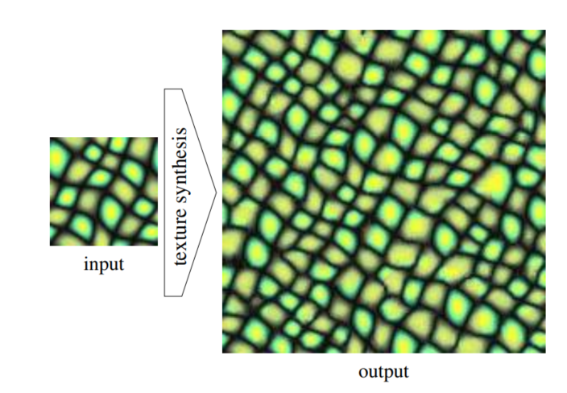
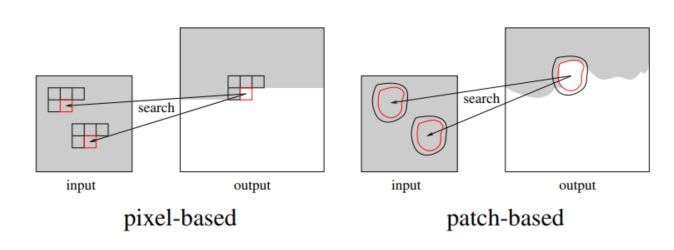
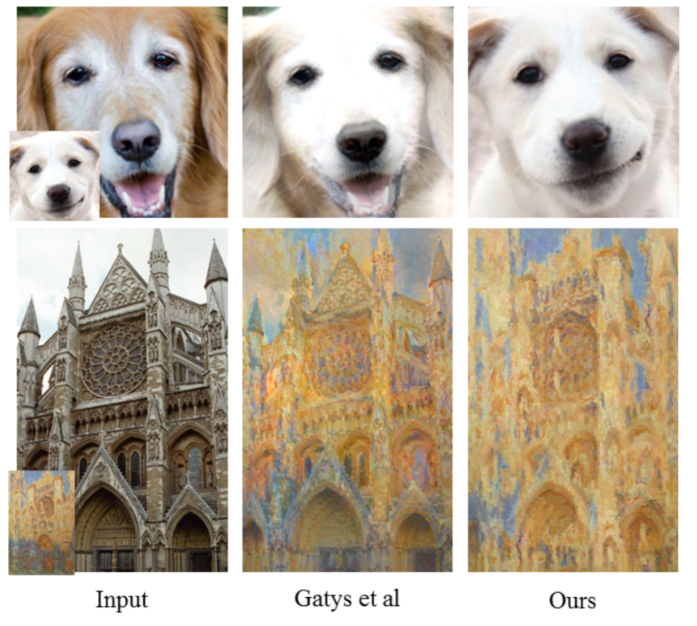

<!DOCTYPE html>
<html lang="en">

<head>
  <meta charset="utf-8" />
    
  <meta name="description" content="Bowen&#39;s Blog" />
  
  <meta name="viewport" content="width=device-width, initial-scale=1, maximum-scale=1" />
  <title>
    Neural Style Transfer Review I |  Bowen&#39;s Blog
  </title>
  <meta name="generator" content="hexo-theme-yilia-plus">
  
  <link rel="shortcut icon" href="/logo.ico" />
  
  
<link rel="stylesheet" href="/css/main.css">

  
  <script src="https://cdn.jsdelivr.net/npm/pace-js@1.0.2/pace.min.js"></script>
  
  

  

<link rel="alternate" href="/atom.xml" title="Bowen's Blog" type="application/atom+xml">
</head>

</html>

<body>
  <div id="app">
    <main class="content">
      <section class="outer">
  <article id="post-Neural-Style-Transfer-Review" class="article article-type-post" itemscope
  itemprop="blogPost" data-scroll-reveal>

  <div class="article-inner">
    
    <header class="article-header">
       
<h1 class="article-title sea-center" style="border-left:0" itemprop="name">
  Neural Style Transfer Review I
</h1>
  

    </header>
    

    
    <div class="article-meta">
      <a href="/2020/03/29/Neural-Style-Transfer-Review/" class="article-date">
  <time datetime="2020-03-29T13:54:05.000Z" itemprop="datePublished">2020-03-29</time>
</a>
      
  <div class="article-category">
    <a class="article-category-link" href="/categories/Review/">Review</a>
  </div>

      
      
<div class="word_count">
    <span class="post-time">
        <span class="post-meta-item-icon">
            <i class="ri-quill-pen-line"></i>
            <span class="post-meta-item-text"> 字数统计:</span>
            <span class="post-count">3.8k字</span>
        </span>
    </span>

    <span class="post-time">
        &nbsp; | &nbsp;
        <span class="post-meta-item-icon">
            <i class="ri-book-open-line"></i>
            <span class="post-meta-item-text"> 阅读时长≈</span>
            <span class="post-count">16分钟</span>
        </span>
    </span>
</div>

      
    </div>
    

    
    
    <div class="tocbot"></div>


    

    
    <div class="article-entry" itemprop="articleBody">
      
      

      
      <h1 id="Neural-Style-Transfer-Review-I"><a href="#Neural-Style-Transfer-Review-I" class="headerlink" title="Neural Style Transfer Review I"></a>Neural Style Transfer Review I</h1><h2 id="概述"><a href="#概述" class="headerlink" title="概述"></a>概述</h2><p>在众多图像风格迁移算法中，图像被看作内容和风格的结合。图像风格迁移算法也可以看成是图像重建算法和纹理建模算法的结合。</p>
<h3 id="纹理建模"><a href="#纹理建模" class="headerlink" title="纹理建模"></a>纹理建模</h3><ul>
<li>纹理的定义：只有比较抽象的定义，包含任意模式的图像（image containing arbitrary patterns）；</li>
<li>纹理建模的定义：生成纹理的一种方式（同样是抽象定义）；</li>
<li>纹理建模的目标：给定一个纹理样例，生成一幅新的图像使得观察到新图像的纹理特征与样例相似。</li>
</ul>
<p></p>
<p>常用的方法主要有：</p>
<ul>
<li>基于统计分布的参数化纹理建模方法：将纹理建模为 N 阶统计量；</li>
<li>基于 MRF 的非参数化纹理建模方法：用 patch 相似度匹配进行逐点合成。</li>
<li>e.g. </li>
</ul>
<p>纹理建模的主要任务是研究如何表示图像的纹理特征，在图像风格转换中，主要用于对风格的建模和提取。</p>
<h3 id="图像重建"><a href="#图像重建" class="headerlink" title="图像重建"></a>图像重建</h3><p>图像重建的主要目的是利用输入的图像特征尽可能对图像进行还原。这和传统的图像特征提取其实属于相反的过程，在 CNN 中，我们也经常根据某个卷积层的特征对图像进行重建，以了解该卷积层的作用（根据图像的哪一部分建立特征）。在图像风格转换领域中，图像重建主要用于对图像内容的建模和提取。</p>
<p></p>
<p>常用的算法也可以分为两类：</p>
<ul>
<li>基于在线图像优化的慢速图像重建方法：即给定输入图片，建立 Loss，并使用梯度下降对 Loss 进行优化，最终得到输出图片，优点是效果不错，但缺点同样明显，那就是速度太慢，实时性不够；</li>
<li>基于离线模型优化的快速图像重建方法：即训练好一个网络，对于给定输入只需一次前向传播即可得到输出图片。优点是实时性较好，缺点是有可能不如慢速方法精细。</li>
</ul>
<p>所以上述的方法相结合我们就可以得到 5 大类图像风格迁移算法：</p>
<ul>
<li>基于在线图像优化的慢速图像重建方法：<ul>
<li>基于统计分布的参数化纹理建模方法；</li>
<li>基于 MRF 的非参数化纹理建模方法；</li>
</ul>
</li>
<li>基于离线模型优化的快速图像重建方法：<ul>
<li>Per-style-per-model;</li>
<li>Multiple-style-per-model;</li>
<li>Arbitrary-style-per-model.</li>
</ul>
</li>
</ul>
<a id="more"></a>
<h2 id="慢速图像重建"><a href="#慢速图像重建" class="headerlink" title="慢速图像重建"></a>慢速图像重建</h2><h3 id="基于统计分布的参数化纹理建模方法"><a href="#基于统计分布的参数化纹理建模方法" class="headerlink" title="基于统计分布的参数化纹理建模方法"></a>基于统计分布的参数化纹理建模方法</h3><h4 id="Image-Style-Transfer-Using-Convolutional-Neural-Networks"><a href="#Image-Style-Transfer-Using-Convolutional-Neural-Networks" class="headerlink" title="Image Style Transfer Using Convolutional Neural Networks"></a>Image Style Transfer Using Convolutional Neural Networks</h4><p>风格迁移领域开山之作，使用预训练的 VGG-19 作为特征提取器。</p>
<ul>
<li>内容表达：在第 $l$ 个卷积层，输出图像 $\vec{x}$ 和内容图像 $\vec{p}$ 的损失函数为 $\mathcal{L}_{\text {content }}(\vec{p}, \vec{x}) = \sum_{l} \mathcal{L}_{\text {content }}(\vec{p}, \vec{x}, l)=\frac{1}{2} \sum_{l} \sum_{i, j}\left(F_{i j}^{l}-P_{i j}^{l}\right)^{2}$，这里 $F_{i j}^{l}, P_{i j}^{l} \in \mathcal{R}^{N_{channels}\times(N_{height*width})}$；</li>
<li>风格表达：在第 $l$ 个卷积层中，不同卷积核之间的 Gram 矩阵 $G_{i j}^{l}=\sum_{k} F_{i k}^{l} F_{j k}^{l}$ 可以用来表达图像风格。第 $l$ 层的风格损失为 $E_{l}=\frac{1}{4 N_{l}^{2} M_{l}^{2}} \sum_{i, j}\left(G_{i j}^{l}-A_{i j}^{l}\right)^{2}$，这里 $A^l$ 为风格图片的 style represention，$G^l$ 为待生成图片的 style represention。所有的 style loss 为 $\mathcal{L}_{\text {style }}(\vec{a}, \vec{x})=\sum_{l=0}^{L} w_{l} E_{l}$ 其中 $w_{l}$ 是对不同层的一个加权。</li>
<li>总损失函数为：$\mathcal{L}_{\text {total }}(\vec{p}, \vec{a}, \vec{x})=\alpha \mathcal{L}_{\text {content }}(\vec{p}, \vec{x})+\beta \mathcal{L}_{\text {style }}(\vec{a}, \vec{x})$，其中 $\alpha, \beta$ 为风格和内容的权重系数。</li>
</ul>
<p>使用 Gram Matrix 结合多层卷积层构建 style loss是其成功之处，这使得迁移后的风格特征更加平滑。至于 Gram Matrix 为什么可以用来表达特征，实际上它是同一层不同 feature 之间的偏心协方差矩阵，它衡量不同 feature 之间的相关性，哪些共同出现，哪些相互影响较小。其实是根据图片的<strong>卷积响应</strong>建模了一个<strong>二阶统计量</strong>，这也对应基于统计分布的建模。点乘是计算相关性的一种很好的方式，这点从 attention 的应用也可以得到体现。</p>
<blockquote>
<p>style transfer 当中，什么是风格，存在自己特性的才叫做风格。因此如何去度量这个自己的特性勒，自己的特点越突出，别人的越不突出最好。这样我们知道：当同一个维度上面的值相乘的时候原来越小酒变得更小，原来越大就变得越大；二不同维度上的关系也在相乘的表达当中表示出来 :</p>
<script type="math/tex; mode=display">G=A^{T} A=\left[\begin{array}{c}\mathbf{a}_{1}^{T} \\ \mathbf{a}_{2}^{T} \\ \vdots \\ \mathbf{a}_{n}^{T}\end{array}\right]\left[\begin{array}{llll}\mathbf{a}_{1} & \mathbf{a}_{2} & \cdots & \mathbf{a}_{n}\end{array}\right] \\
= \left[\begin{array}{cccc}\mathbf{a}_{1}^{T} \mathbf{a}_{1} & \mathbf{a}_{1}^{T} \mathbf{a}_{2} & \cdots & \mathbf{a}_{1}^{T} \mathbf{a}_{n} \\ \mathbf{a}_{2}^{T} \mathbf{a}_{1} & \mathbf{a}_{2}^{T} \mathbf{a}_{2} & \cdots & \mathbf{a}_{2}^{T} \mathbf{a}_{n} \\ \mathbf{a}_{n}^{T} \mathbf{a}_{1} & \mathbf{a}_{n}^{T} \mathbf{a}_{2} & \cdots & \mathbf{a}_{n}^{T} \mathbf{a}_{n}\end{array}\right]</script></blockquote>
<p>存在的一些问题：</p>
<ul>
<li>速度很慢，实时性很差，对应用场景有限制；</li>
<li>对于艺术风格的迁移看上去没有太大问题，对于风格图片也是真实场景（具有连续对称结构）的迁移，在捕捉图片的连续结构方面有缺陷，出现很多噪声，图片细节也有较多丢失，作者觉得可以适应滤波器等方法对生成的图片进一步进行降噪处理；</li>
<li>没有考虑笔触的变化（单一油画风格，没办法一部分细致一些一部分粗糙一些）；</li>
<li>图像深层语义还是捕获有欠缺；</li>
<li>其实问题的难点还是在于如何定义风格，以及有没有可能在完全不传递内容的情况下传递风格。</li>
</ul>
<h4 id="INCORPORATING-LONG-RANGE-CONSISTENCY-IN-CNN-BASED-TEXTURE-GENERATION"><a href="#INCORPORATING-LONG-RANGE-CONSISTENCY-IN-CNN-BASED-TEXTURE-GENERATION" class="headerlink" title="INCORPORATING LONG-RANGE CONSISTENCY IN CNN-BASED TEXTURE GENERATION"></a>INCORPORATING LONG-RANGE CONSISTENCY IN CNN-BASED TEXTURE GENERATION</h4><p>实际上是对上面的一些改进，为了捕捉到更多图片的连续信息，style loss 不是每个点和其对应位置点乘，而变成每个位置和图像进行一个位置变换之后的像素进行点乘，例如 $(i, j)$ 和 $(i, j+\delta)$ 或者 $(i, j)$ 和 $(i+\delta, j)$ 点乘，这样可以捕获到具有一定间隔的图像连续特征。</p>
<p>一定程度上解决了图片连续信息缺失的问题，但可以看出在一些应用场景中还是不尽人意，例如 season transfer 中，图像的像素位置信息出现了较大偏差，导致观感不太好。</p>
<h4 id="Demystifying-Neural-Style-Transfer"><a href="#Demystifying-Neural-Style-Transfer" class="headerlink" title="Demystifying Neural Style Transfer"></a>Demystifying Neural Style Transfer</h4><p>这篇文章从 <strong>Domain Adaptation</strong> （属于迁移学习）的角度分析风格转换。一般的机器学习方法都是假设训练数据和测试数据属于相同的分布，而 Domain Adaptation 是假设训练数据和测试数据的分布不同，我们试图根据测试数据集训练出来可以预测（符合、逼近）测试数据集分布的模型。</p>
<p>Domain Adaptation 中一种常用的训练方法是最小化 MMD (Maximum Mean Discrepancy)，这是衡量两种不同分布差异的一个统计值，只有当两个分布 $p=q$ 时，MMD 为 0。假设训练集和测试集分别为 $X=\left\{\mathbf{x}_{i}\right\}_{i=1}^{n},Y=\left\{\mathbf{y}_{i}\right\}_{i=1}^{n}$，其中 $x, y$ 是由分布 $p,q$ 生成的。MMD 定义如下：</p>
<script type="math/tex; mode=display">\begin{aligned}
&\operatorname{MMD}[\mathcal{F}, X, Y]:=\sup _{f \in \mathcal{F}}\left(\frac{1}{m} \sum_{i=1}^{m} f\left(x_{i}\right)-\frac{1}{n} \sum_{i=1}^{n} f\left(y_{i}\right)\right)\\
\end{aligned}</script><p>我们进一步限制 $f$ 可能的取值空间，选取 $f$ 只能取 Reproducing Kernel Hilbert Space 单位球中的某点作为约束，进一步推导：</p>
<script type="math/tex; mode=display">\begin{aligned}
& \mathrm{MMD}^{2}[X, Y] \\
=&\left\|\mathbf{E}_{x}[\phi(\mathbf{x})]-\mathbf{E}_{y}[\phi(\mathbf{y})]\right\|^{2} \\
=&\left\|\frac{1}{n} \sum_{i=1}^{n} \phi\left(\mathbf{x}_{i}\right)-\frac{1}{m} \sum_{j=1}^{m} \phi\left(\mathbf{y}_{j}\right)\right\|^{2} \\
=& \frac{1}{n^{2}} \sum_{i=1}^{n} \sum_{i^{\prime}=1}^{n} \phi\left(\mathbf{x}_{i}\right)^{T} \phi\left(\mathbf{x}_{i^{\prime}}\right)+\frac{1}{m^{2}} \sum_{j=1}^{m} \sum_{j^{\prime}=1}^{m} \phi\left(\mathbf{y}_{j}\right)^{T} \phi\left(\mathbf{y}_{j^{\prime}}\right) \\
&-\frac{2}{n m} \sum_{i=1}^{n} \sum_{j=1}^{m} \phi\left(\mathbf{x}_{i}\right)^{T} \phi\left(\mathbf{y}_{j}\right)
\end{aligned}</script><p>其中 $\phi \in \mathcal{X} \rightarrow \mathcal{H}$，定义 Kernel Function $k(\mathbf{x}, \mathbf{y}) = \langle\phi(\mathbf{x}), \phi(\mathbf{y})\rangle$，于是有：</p>
<script type="math/tex; mode=display">\begin{aligned}
& \mathrm{MMD}^{2}[X, Y] \\
=& \frac{1}{n^{2}} \sum_{i=1}^{n} \sum_{i^{\prime}=1}^{n} k\left(\mathbf{x}_{i}, \mathbf{x}_{i^{\prime}}\right)+\frac{1}{m^{2}} \sum_{j=1}^{m} \sum_{j^{\prime}=1}^{m} k\left(\mathbf{y}_{j}, \mathbf{y}_{j^{\prime}}\right) \\
&-\frac{2}{n m} \sum_{i=1}^{n} \sum_{j=1}^{m} k\left(\mathbf{x}_{i}, \mathbf{y}_{j}\right)
\end{aligned}</script><p>$k(\mathbf{x}, \mathbf{y})$ 是 kernel function。<em>（PS:这部分理论推导没有完全看懂，需要再学习一下。）</em></p>
<h5 id="关于-Kernel-Function"><a href="#关于-Kernel-Function" class="headerlink" title="关于 Kernel Function"></a>关于 Kernel Function</h5><p>Kernel function 是在机器学习中常用的一种技巧，本质上是用线性的方法去解决非线性的问题。</p>
<p>参考文献，kernel 的定义为 $K(x, y)=\langle\phi(x), \phi(y)\rangle$，$\phi$ 是低维向高维的映射，kernel function 为两者的点乘。其实也可以理解为，通过 $\phi$ 在更高维的角度看问题，可以在使用 kernel function 在高维衡量两者的相似性。</p>
<p>文章给出了由 Gram Matrix 建立的 style loss 可以 work 的理论依据，回忆 style loss 的表达式 $\mathcal{L}_{\text {style}}^{l}=\frac{1}{4 N_{l}^{2} M_{l}^{2}} \sum_{i=1}^{N_{l}} \sum_{j=1}^{N_{l}}\left(G_{i j}^{l}-A_{i j}^{l}\right)^{2}$，其中 $G_{i j}^{l}=\sum_{k=1}^{M_{l}} F_{i k}^{l} F_{j k}^{l}$。取二阶多项式 kernel $k(\mathbf{x}, \mathbf{y})=\left(\mathbf{x}^{T} \mathbf{y}\right)^{2}$，那么 style loss 可以写为：</p>
<script type="math/tex; mode=display">\begin{aligned}
\mathcal{L}_{\text {style}}^{l}=& \frac{1}{4 N_{l}^{2} M_{l}^{2}} \sum_{k_{1}=1}^{M_{l}} \sum_{k_{2}=1}^{M_{l}}\left(k\left(\mathbf{f}_{\cdot k_{1}}^{l}, \mathbf{f}_{\cdot k_{2}}^{l}\right)\right.\left.+k\left(\mathbf{s}_{\cdot k_{1}}^{l}, \mathbf{s}_{\cdot k_{2}}^{l}\right)-2 k\left(\mathbf{f}_{\cdot k_{1}}^{l}, \mathbf{s}_{\cdot k_{2}}^{l}\right)\right) \\
=& \frac{1}{4 N_{l}^{2}} \operatorname{MMD}^{2}\left[\mathcal{F}^{l}, \mathcal{S}^{l}\right]
\end{aligned}</script><p>其中 $\mathbf{f}_{. k}^{l}$ 和 $\mathbf{s}_{. k}^{l}$ 是 $\mathbf{F}^{l}$ 和 $\mathbf{S}^{l}$ 的第 k 列。</p>
<p>这个发现证明了 style 可以通过不同卷积层的特征分布来建模，并且 style transfer 可以看作拟合 style image 的特征分布的过程。</p>
<p>文章提出类似可以使用不同的 kernel function 来建模损失函数：</p>
<script type="math/tex; mode=display">\begin{array}{l}
\mathcal{L}_{s t y l e}^{l}=\frac{1}{Z_{k}^{l}} \mathrm{MMD}^{2}\left[\mathcal{F}^{l}, \mathcal{S}^{l}\right] \\
=\frac{1}{Z_{k}^{l}} \sum_{i=1}^{M_{l}} \sum_{j=1}^{M_{l}}\left(k\left(\mathbf{f}_{\cdot i}^{l}, \mathbf{f}_{\cdot j}^{l}\right)+k\left(\mathbf{s}_{\cdot i}^{l}, \mathbf{s}_{\cdot j}^{l}\right)-2 k\left(\mathbf{f}_{. i}^{l}, \mathbf{s}_{\cdot j}^{l}\right)\right)
\end{array}</script><p>kernel function 可以取 linear kernel, polynomial kernel 和 gauss kernel 等，均取得很好的效果。</p>
<p>作者还提出在 Batch Normalization layer 也包含不同 domain 特征，可以通过 BN 层的统计特征进行 style 建模：</p>
<script type="math/tex; mode=display">\mathcal{L}_{s t y l e}^{l}=\frac{1}{N_{l}} \sum_{i=1}^{N_{l}}\left(\left(\mu_{F^{l}}^{i}-\mu_{S^{l}}^{i}\right)^{2}+\left(\sigma_{F^{l}}^{i}-\sigma_{S^{l}}^{i}\right)^{2}\right)</script><p>均取得不错的效果。</p>
<blockquote>
<p>这种 Gram-based style transfer algorithm 具有不稳定性，因为有研究发现即使两张图片的均值和方差差异很大，也有可能具有相似的 Gram Matrix，所以有人提出加入直方图损失，使输出图片的像素灰度值分布尽可能接近风格图片，但这样做的计算复杂度很高。另外，针对这类算法抽取特征都是在 <strong>CNN feature space</strong> 会不可避免导致细节缺失的问题，有人提出加入 Laplacian Loss，即内容图片和输出图片都经过拉普拉斯算子卷积（常用的边缘检测的手段）之后的欧几里得距离，这样可以保留更多的细节，效果也不错。但该类算法本质的问题并没有得到完全解决。</p>
</blockquote>
<h3 id="基于-MRF-的非参数化纹理建模方法"><a href="#基于-MRF-的非参数化纹理建模方法" class="headerlink" title="基于 MRF 的非参数化纹理建模方法"></a>基于 MRF 的非参数化纹理建模方法</h3><p>这类方法的主要想法：使用统计量进行纹理建模大多只考虑两张图片像素级别的关联，容易丢失一些空间分布特征，而使用基于 MRF 的 patch 匹配可以更好地保留图像的空间分布信息，使生成的图像更自然。</p>
<h4 id="Combining-Markov-Random-Fields-and-Convolutional-Neural-Networks-for-Image-Synthesis"><a href="#Combining-Markov-Random-Fields-and-Convolutional-Neural-Networks-for-Image-Synthesis" class="headerlink" title="Combining Markov Random Fields and Convolutional Neural Networks for Image Synthesis"></a>Combining Markov Random Fields and Convolutional Neural Networks for Image Synthesis</h4><p>基于 MRF：一个像素的取值分布和其周围的 $k\times k$ 个像素相关</p>
<p>主要想法是<strong>希望输出图片的 CNN 高层次 encoding 尽可能接近内容图片，但 local patch 和风格图片的相似度更高，以保留风格图片的连续特征</strong>。</p>
<p>输入：style image, content image.</p>
<p>损失函数：</p>
<script type="math/tex; mode=display">\begin{aligned}
\mathbf{x}=& \arg \min _{x} E_{s}\left(\Phi(\mathbf{x}), \Phi\left(\mathbf{x}_{s}\right)\right)+\\
& \alpha_{1} E_{c}\left(\Phi(\mathbf{x}), \Phi\left(\mathbf{x}_{c}\right)\right)+\alpha_{2} \Upsilon(\mathbf{x})
\end{aligned}</script><p>其中：</p>
<script type="math/tex; mode=display">\begin{aligned}
E_{s}\left(\Phi(\mathbf{x}), \Phi\left(\mathbf{x}_{s}\right)\right)=\sum_{i=1}^{m}\left\|\Psi_{i}(\Phi(\mathbf{x}))-\Psi_{N N(i)}\left(\Phi\left(\mathbf{x}_{s}\right)\right)\right\|^{2} \\
N N(i):=\underset{j=1, \ldots, m_{s}}{\arg \min } \frac{\Psi_{i}(\Phi(\mathbf{x})) \cdot \Psi_{j}\left(\Phi\left(\mathbf{x}_{s}\right)\right)}{\left|\Psi_{i}(\Phi(\mathbf{x}))\right| \cdot\left|\Psi_{j}\left(\Phi\left(\mathbf{x}_{s}\right)\right)\right|}\\
E_{c}\left(\Phi(\mathbf{x}), \Phi\left(\mathbf{x}_{c}\right)\right)=\left\|\Phi(\mathbf{x})-\Phi\left(\mathbf{x}_{c}\right)\right\|^{2} \\
\Upsilon(\mathbf{x})=\sum_{i, j}\left(\left(x_{i, j+1}-x_{i, j}\right)^{2}+\left(x_{i+1, j}-x_{i, j}\right)^{2}\right)
\end{aligned}</script><p>其中 style loss 的 matching 可以通过一个卷积层实现。</p>
<p>分析：高层次上的 matching 更能把握内容的一致性，在高层次上的融合效果更好（相比像素级别）。</p>
<p>缺陷：</p>
<ul>
<li>在建筑物等透视结构差异较大的风格转换时，会引入 style image 的内容导致 content image 中的内容被替换，只适用于允许结构发生形变的场景，应用场景存在局限。</li>
<li>e.g.</li>
</ul>
<h2 id="参考文献"><a href="#参考文献" class="headerlink" title="参考文献"></a>参考文献</h2><p><a href="https://www.zhihu.com/question/49805962" target="_blank" rel="noopener">[1] 如何用简单易懂的例子解释格拉姆矩阵/Gram matrix？</a></p>
<p><a href="https://zhuanlan.zhihu.com/p/36346074" target="_blank" rel="noopener">[2] 图像风格化算法综述三部曲</a></p>
<p><a href="https://arxiv.org/abs/1705.04058" target="_blank" rel="noopener">[3] Neural Style Transfer: A Review</a></p>
<p><a href="https://towardsdatascience.com/kernel-function-6f1d2be6091" target="_blank" rel="noopener">[4] Kernel Functions</a></p>

      
      <!-- reward -->
      
      <div id="reward-btn">
        打赏
      </div>
      
    </div>
    
    
      <!-- copyright -->
      
        <div class="declare">
          <ul class="post-copyright">
            <li>
              <i class="ri-copyright-line"></i>
              <strong>版权声明： </strong s>
              本博客所有文章除特别声明外，均采用 <a href="https://www.apache.org/licenses/LICENSE-2.0.html" rel="external nofollow"
                target="_blank">Apache License 2.0</a> 许可协议。转载请注明出处！
            </li>
          </ul>
        </div>
        
    <footer class="article-footer">
      
          
<div class="share-btn">
      <span class="share-sns share-outer">
        <i class="ri-share-forward-line"></i>
        分享
      </span>
      <div class="share-wrap">
        <i class="arrow"></i>
        <div class="share-icons">
          
          <a class="weibo share-sns" href="javascript:;" data-type="weibo">
            <i class="ri-weibo-fill"></i>
          </a>
          <a class="weixin share-sns wxFab" href="javascript:;" data-type="weixin">
            <i class="ri-wechat-fill"></i>
          </a>
          <a class="qq share-sns" href="javascript:;" data-type="qq">
            <i class="ri-qq-fill"></i>
          </a>
          <a class="douban share-sns" href="javascript:;" data-type="douban">
            <i class="ri-douban-line"></i>
          </a>
          <!-- <a class="qzone share-sns" href="javascript:;" data-type="qzone">
            <i class="icon icon-qzone"></i>
          </a> -->
          
          <a class="facebook share-sns" href="javascript:;" data-type="facebook">
            <i class="ri-facebook-circle-fill"></i>
          </a>
          <a class="twitter share-sns" href="javascript:;" data-type="twitter">
            <i class="ri-twitter-fill"></i>
          </a>
          <a class="google share-sns" href="javascript:;" data-type="google">
            <i class="ri-google-fill"></i>
          </a>
        </div>
      </div>
</div>

<div class="wx-share-modal">
    <a class="modal-close" href="javascript:;"><i class="ri-close-circle-line"></i></a>
    <p>扫一扫，分享到微信</p>
    <div class="wx-qrcode">
      
    </div>
</div>

<div id="share-mask"></div>
      
      
  <ul class="article-tag-list" itemprop="keywords"><li class="article-tag-list-item"><a class="article-tag-list-link" href="/tags/CV/" rel="tag">CV</a></li><li class="article-tag-list-item"><a class="article-tag-list-link" href="/tags/Style-Transfer/" rel="tag">Style Transfer</a></li></ul>


    </footer>

  </div>

  
  
  <nav class="article-nav">
    
      <a href="/2020/04/05/Neural-Style-Transfer-Review-II/" class="article-nav-link">
        <strong class="article-nav-caption">上一篇</strong>
        <div class="article-nav-title">
          
            Neural Style Transfer Review II
          
        </div>
      </a>
    
    
      <a href="/2020/03/25/Introduction-to-IncludeOS/" class="article-nav-link">
        <strong class="article-nav-caption">下一篇</strong>
        <div class="article-nav-title">Introduction to IncludeOS</div>
      </a>
    
  </nav>


  

  
  
<!-- valine评论 -->
<div id="vcomments-box">
    <div id="vcomments">
    </div>
</div>
<script src="//cdn1.lncld.net/static/js/3.0.4/av-min.js"></script>
<script src='https://cdn.jsdelivr.net/npm/valine@1.3.10/dist/Valine.min.js'></script>
<script>
    new Valine({
        el: '#vcomments',
        app_id: '',
        app_key: '',
        path: window.location.pathname,
        notify: 'false',
        verify: 'false',
        avatar: 'mp',
        placeholder: '给我的文章加点评论吧~',
        recordIP: true
    });
    const infoEle = document.querySelector('#vcomments .info');
    if (infoEle && infoEle.childNodes && infoEle.childNodes.length > 0) {
        infoEle.childNodes.forEach(function (item) {
            item.parentNode.removeChild(item);
        });
    }
</script>
<style>
    #vcomments-box {
        padding: 5px 30px;
    }

    @media screen and (max-width: 800px) {
        #vcomments-box {
            padding: 5px 0px;
        }
    }

    #vcomments-box #vcomments {
        background-color: #fff;
    }

    .v .vlist .vcard .vh {
        padding-right: 20px;
    }

    .v .vlist .vcard {
        padding-left: 10px;
    }
</style>

  

  
  
  

</article>
</section>
      <footer class="footer">
  <div class="outer">
    <ul class="list-inline">
      <li>
        &copy;
        2020
        Bowen
      </li>
      <li>
        
        Powered by
        
        
        <a href="https://hexo.io" target="_blank">Hexo</a> Theme <a href="https://github.com/Shen-Yu/hexo-theme-ayer" target="_blank">Ayer</a>
        
      </li>
    </ul>
    <ul class="list-inline">
      <li>
        
      </li>
      
      <li>
        <!-- cnzz统计 -->
        
      </li>
    </ul>
  </div>
</footer>
      <div class="to_top">
        <div class="totop" id="totop">
  <i class="ri-arrow-up-line"></i>
</div>
      </div>
    </main>
    <aside class="sidebar">
      <button class="navbar-toggle"></button>
<nav class="navbar">
  
  <div class="logo">
    <a href="/"></a>
  </div>
  
  <ul class="nav nav-main">
    
    <li class="nav-item">
      <a class="nav-item-link" href="/">主页</a>
    </li>
    
    <li class="nav-item">
      <a class="nav-item-link" href="/archives">归档</a>
    </li>
    
    <li class="nav-item">
      <a class="nav-item-link" href="/categories">分类</a>
    </li>
    
    <li class="nav-item">
      <a class="nav-item-link" href="/tags">标签</a>
    </li>
    
    <li class="nav-item">
      <a class="nav-item-link" href="http://home.ustc.edu.cn/~zhangbowen" target="_blank" rel="noopener">关于我</a>
    </li>
    
  </ul>
</nav>
<nav class="navbar navbar-bottom">
  <ul class="nav">
    <li class="nav-item">
      
      <a class="nav-item-link nav-item-search"  title="Search">
        <i class="ri-search-line"></i>
      </a>
      
      
      <a class="nav-item-link" target="_blank" href="/atom.xml" title="RSS Feed">
        <i class="ri-rss-line"></i>
      </a>
      
    </li>
  </ul>
</nav>
<div class="search-form-wrap">
  <div class="local-search local-search-plugin">
  <input type="search" id="local-search-input" class="local-search-input" placeholder="Search...">
  <div id="local-search-result" class="local-search-result"></div>
</div>
</div>
    </aside>
    <div id="mask"></div>

<!-- #reward -->
<div id="reward">
  <span class="close"><i class="ri-close-line"></i></span>
  <p class="reward-p"><i class="ri-cup-line"></i>请我喝杯咖啡吧~</p>
  <div class="reward-box">
    
    <div class="reward-item">
      
      <span class="reward-type">支付宝</span>
    </div>
    
    
    <div class="reward-item">
      
      <span class="reward-type">微信</span>
    </div>
    
  </div>
</div>
    
<script src="/js/jquery-2.0.3.min.js"></script>


<script src="/js/share.js"></script>


<script src="/js/lazyload.min.js"></script>


<script>
  try {
    var typed = new Typed("#subtitle", {
      strings: ['没有什么会永垂不朽', '二十年后还是一样轻狂，一样不枉', '想要的都拥有，得不到的都释怀'],
      startDelay: 0,
      typeSpeed: 200,
      loop: true,
      backSpeed: 100,
      showCursor: true
    });
  } catch (err) {
  }

</script>


<script src="/js/tocbot.min.js"></script>

<script>
  // Tocbot_v4.7.0  http://tscanlin.github.io/tocbot/
  tocbot.init({
    tocSelector: '.tocbot',
    contentSelector: '.article-entry',
    headingSelector: 'h1, h2, h3, h4, h5, h6',
    hasInnerContainers: true,
    scrollSmooth: true,
    scrollContainer: 'main',
    positionFixedSelector: '.tocbot',
    positionFixedClass: 'is-position-fixed',
    fixedSidebarOffset: 'auto',
    onClick: (e) => {
      $('.toc-link').removeClass('is-active-link');
      $(`a[href=${e.target.hash}]`).addClass('is-active-link');
      $(e.target.hash).scrollIntoView();
      return false;
    }
  });
</script>


<script src="https://cdn.jsdelivr.net/npm/jquery-modal@0.9.2/jquery.modal.min.js"></script>
<link rel="stylesheet" href="https://cdn.jsdelivr.net/npm/jquery-modal@0.9.2/jquery.modal.min.css">
<script src="https://cdn.jsdelivr.net/npm/justifiedGallery@3.7.0/dist/js/jquery.justifiedGallery.min.js"></script>

<script src="/js/ayer.js"></script>


<!-- Root element of PhotoSwipe. Must have class pswp. -->
<div class="pswp" tabindex="-1" role="dialog" aria-hidden="true">

    <!-- Background of PhotoSwipe. 
         It's a separate element as animating opacity is faster than rgba(). -->
    <div class="pswp__bg"></div>

    <!-- Slides wrapper with overflow:hidden. -->
    <div class="pswp__scroll-wrap">

        <!-- Container that holds slides. 
            PhotoSwipe keeps only 3 of them in the DOM to save memory.
            Don't modify these 3 pswp__item elements, data is added later on. -->
        <div class="pswp__container">
            <div class="pswp__item"></div>
            <div class="pswp__item"></div>
            <div class="pswp__item"></div>
        </div>

        <!-- Default (PhotoSwipeUI_Default) interface on top of sliding area. Can be changed. -->
        <div class="pswp__ui pswp__ui--hidden">

            <div class="pswp__top-bar">

                <!--  Controls are self-explanatory. Order can be changed. -->

                <div class="pswp__counter"></div>

                <button class="pswp__button pswp__button--close" title="Close (Esc)"></button>

                <button class="pswp__button pswp__button--share" style="display:none" title="Share"></button>

                <button class="pswp__button pswp__button--fs" title="Toggle fullscreen"></button>

                <button class="pswp__button pswp__button--zoom" title="Zoom in/out"></button>

                <!-- Preloader demo http://codepen.io/dimsemenov/pen/yyBWoR -->
                <!-- element will get class pswp__preloader--active when preloader is running -->
                <div class="pswp__preloader">
                    <div class="pswp__preloader__icn">
                        <div class="pswp__preloader__cut">
                            <div class="pswp__preloader__donut"></div>
                        </div>
                    </div>
                </div>
            </div>

            <div class="pswp__share-modal pswp__share-modal--hidden pswp__single-tap">
                <div class="pswp__share-tooltip"></div>
            </div>

            <button class="pswp__button pswp__button--arrow--left" title="Previous (arrow left)">
            </button>

            <button class="pswp__button pswp__button--arrow--right" title="Next (arrow right)">
            </button>

            <div class="pswp__caption">
                <div class="pswp__caption__center"></div>
            </div>

        </div>

    </div>

</div>

<link rel="stylesheet" href="https://cdn.jsdelivr.net/npm/photoswipe@4.1.3/dist/photoswipe.min.css">
<link rel="stylesheet" href="https://cdn.jsdelivr.net/npm/photoswipe@4.1.3/dist/default-skin/default-skin.min.css">
<script src="https://cdn.jsdelivr.net/npm/photoswipe@4.1.3/dist/photoswipe.min.js"></script>
<script src="https://cdn.jsdelivr.net/npm/photoswipe@4.1.3/dist/photoswipe-ui-default.min.js"></script>

<script>
    function viewer_init() {
        let pswpElement = document.querySelectorAll('.pswp')[0];
        let $imgArr = document.querySelectorAll(('.article-entry img:not(.reward-img)'))

        $imgArr.forEach(($em, i) => {
            $em.onclick = () => {
                // slider展开状态
                // todo: 这样不好，后面改成状态
                if (document.querySelector('.left-col.show')) return
                let items = []
                $imgArr.forEach(($em2, i2) => {
                    let img = $em2.getAttribute('data-idx', i2)
                    let src = $em2.getAttribute('data-target') || $em2.getAttribute('src')
                    let title = $em2.getAttribute('alt')
                    // 获得原图尺寸
                    const image = new Image()
                    image.src = src
                    items.push({
                        src: src,
                        w: image.width || $em2.width,
                        h: image.height || $em2.height,
                        title: title
                    })
                })
                var gallery = new PhotoSwipe(pswpElement, PhotoSwipeUI_Default, items, {
                    index: parseInt(i)
                });
                gallery.init()
            }
        })
    }
    viewer_init()
</script>


<script type="text/x-mathjax-config">
  MathJax.Hub.Config({
      tex2jax: {
          inlineMath: [ ['$','$'], ["\\(","\\)"]  ],
          processEscapes: true,
          skipTags: ['script', 'noscript', 'style', 'textarea', 'pre', 'code']
      }
  });

  MathJax.Hub.Queue(function() {
      var all = MathJax.Hub.getAllJax(), i;
      for(i=0; i < all.length; i += 1) {
          all[i].SourceElement().parentNode.className += ' has-jax';
      }
  });
</script>

<script src="https://cdn.jsdelivr.net/npm/mathjax@2.7.6/unpacked/MathJax.js?config=TeX-AMS-MML_HTMLorMML"></script>
<script>
  var ayerConfig = {
    mathjax: true
  }
</script>


<script type="text/javascript" src="https://js.users.51.la/20544303.js"></script>

    
    <div id="music">
    
    
    
    <iframe frameborder="no" border="1" marginwidth="0" marginheight="0" width="200" height="52"
        src="//music.163.com/outchain/player?type=3&id=2063028227&auto=0&height=32"></iframe>
</div>

<style>
    #music {
        position: fixed;
        right: 15px;
        bottom: 0;
        z-index: 998;
    }
</style>
    
  </div>
</body>

</html>